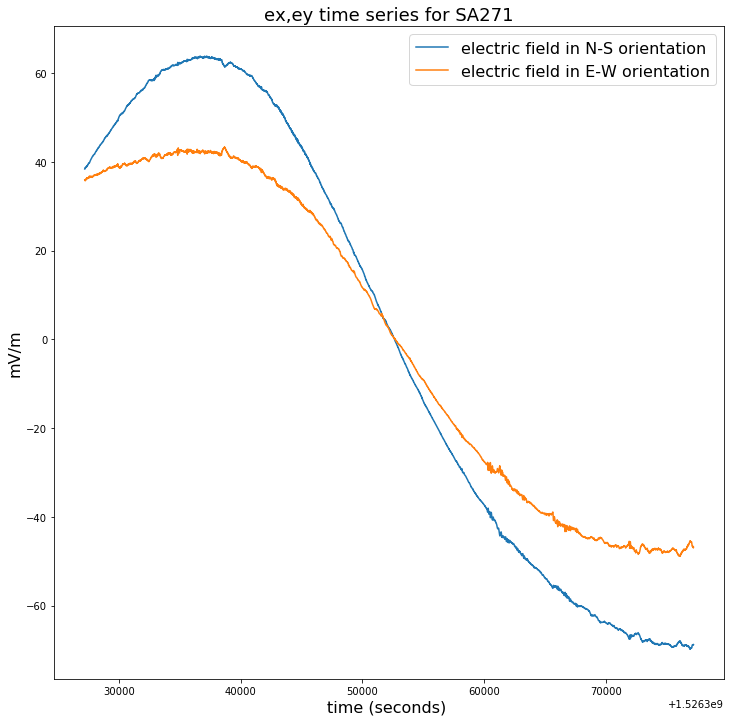

Accessing MT time series data from the NCI THREDDS Data Server using OPeNDAP¶
Requirements¶
The following tutorial shows how to access magnetotelluric (MT) time series data stored as NetCDF4 files from the National Computational Infrastructure (NCI) THREDDS data server.
This tutorial makes use of the IOOS THREDDS crawler as well as the Python3 library urllib.request.
Additionally, the following Python3 libraries are required to run this tutorial: netcdf4-python matplotlib.pyplot numpy os
Import libraries¶
[1]:
from thredds_crawler.crawl import Crawl
import urllib.request
import urllib
from netCDF4 import Dataset
import matplotlib.pyplot as plt
import numpy as np
import os
%matplotlib inline
Run a crawl on the NCI THREDDS Data Server AusLAMP Musgraves MT time series endpoint xml.¶
[2]:
### For this example, we are looking at the Level 1 time series data
c = Crawl('http://dapds00.nci.org.au/thredds/catalog/my80/AusLAMP/SA_AusLAMP_MT_Survey_Musgraves_APY_2016_to_2018/SA/Level_1_Concatenated_Resampled_Rotated_Time_Series_NetCDF/catalog.xml', select=['.*nc'])
Using OPeNDAP to view MT time series metadata and data¶
[3]:
### define all OPeNDAP URLs
urls_opendap = [s.get("url") for d in c.datasets for s in d.services if s.get("service").lower() == "opendap"]
[4]:
## look at the first 3 OPeNDAP endpoints
print(urls_opendap[:3])
['http://dapds00.nci.org.au/thredds/dodsC/my80/AusLAMP/SA_AusLAMP_MT_Survey_Musgraves_APY_2016_to_2018/SA/Level_1_Concatenated_Resampled_Rotated_Time_Series_NetCDF/SA225-2_138_173.nc', 'http://dapds00.nci.org.au/thredds/dodsC/my80/AusLAMP/SA_AusLAMP_MT_Survey_Musgraves_APY_2016_to_2018/SA/Level_1_Concatenated_Resampled_Rotated_Time_Series_NetCDF/SA227_130_133.nc', 'http://dapds00.nci.org.au/thredds/dodsC/my80/AusLAMP/SA_AusLAMP_MT_Survey_Musgraves_APY_2016_to_2018/SA/Level_1_Concatenated_Resampled_Rotated_Time_Series_NetCDF/SA242_304_322.nc']
[5]:
## print the number of OPeNDAP endpoints from the crawl
print(len(urls_opendap))
47
[6]:
### let's look at 2 example Level 1 Musgraves MT Time Series NetCDF files (stations SA271 and SA272)
SA271 = [i for i in urls_opendap if i.split('/')[-1].startswith('SA271')]
SA272 = [i for i in urls_opendap if i.split('/')[-1].startswith('SA272')]
[7]:
## print OPeNDAP endpoints for SA271 and SA272
print(SA271)
print(SA272)
['http://dapds00.nci.org.au/thredds/dodsC/my80/AusLAMP/SA_AusLAMP_MT_Survey_Musgraves_APY_2016_to_2018/SA/Level_1_Concatenated_Resampled_Rotated_Time_Series_NetCDF/SA271_134_172.nc']
['http://dapds00.nci.org.au/thredds/dodsC/my80/AusLAMP/SA_AusLAMP_MT_Survey_Musgraves_APY_2016_to_2018/SA/Level_1_Concatenated_Resampled_Rotated_Time_Series_NetCDF/SA272_134_172.nc']
[8]:
### let's browse some of the metadata from the 2 example Level 1 Musgraves MT Time Series NetCDF files
for opendap_example in SA271:
print(opendap_example)
f = Dataset(opendap_example, 'r')
print(f.dimensions.keys())
print('site name is:', f.site_name)
print('field recorded latitude is:', f.field_GPS_latitude_dec_deg)
print('field recorded longitude is:', f.field_GPS_longitude_dec_deg)
print('MT box case number is:', f.MT_box_case_number)
print('magnetometer_type_model is',f.magnetometer_type_model)
print('power_source_type is',f.power_source_type_or_model)
print('')
for opendap_example in SA272:
print(opendap_example)
f = Dataset(opendap_example, 'r')
print(f.dimensions.keys())
print('site name is:', f.site_name)
print('field recorded latitude is:', f.field_GPS_latitude_dec_deg)
print('field recorded longitude is:', f.field_GPS_longitude_dec_deg)
print('MT box case number is:', f.MT_box_case_number)
print('magnetometer_type_model is',f.magnetometer_type_model)
print('power_source_type is',f.power_source_type_or_model)
print('')
http://dapds00.nci.org.au/thredds/dodsC/my80/AusLAMP/SA_AusLAMP_MT_Survey_Musgraves_APY_2016_to_2018/SA/Level_1_Concatenated_Resampled_Rotated_Time_Series_NetCDF/SA271_134_172.nc
odict_keys(['bx', 'by', 'bz', 'ex', 'ey', 'time'])
site name is: GVD
field recorded latitude is: -27.49422
field recorded longitude is: 132.00921
MT box case number is: 18
magnetometer_type_model is Bartington, Model - Mag03MS70 (70 nano Tesla), Type - Fluxgate, 3 Component, Frequency response: 0 - 1kHz, Bandwidth: 0 - 3kHz
power_source_type is 12Volt 72 Amp/Hr Battery, Power Supply Charging - Solar Panel, 60Watt
http://dapds00.nci.org.au/thredds/dodsC/my80/AusLAMP/SA_AusLAMP_MT_Survey_Musgraves_APY_2016_to_2018/SA/Level_1_Concatenated_Resampled_Rotated_Time_Series_NetCDF/SA272_134_172.nc
odict_keys(['bx', 'by', 'bz', 'ex', 'ey', 'time'])
site name is: South of Illllinna
field recorded latitude is: -27.49907
field recorded longitude is: 131.50538
MT box case number is: 5
magnetometer_type_model is Bartington, Model - Mag03MS70 (70 nano Tesla), Type - Fluxgate, 3 Component, Frequency response: 0 - 1kHz, Bandwidth: 0 - 3kHz
power_source_type is 12Volt 72 Amp/Hr Battery, Power Supply Charging - Solar Panel, 60Watt
[9]:
### Checking that variables in SA271 have the same shape
f = Dataset(SA271[0],'r')
vars = f.variables.keys()
for item in vars:
print('Variable: \t', item)
print('Dimensions: \t', f[item].dimensions)
print('Shape: \t', f[item].shape, '\n')
Variable: ex
Dimensions: ('ex',)
Shape: (3369600,)
Variable: ey
Dimensions: ('ey',)
Shape: (3369600,)
Variable: bx
Dimensions: ('bx',)
Shape: (3369600,)
Variable: by
Dimensions: ('by',)
Shape: (3369600,)
Variable: bz
Dimensions: ('bz',)
Shape: (3369600,)
Variable: time
Dimensions: ('time',)
Shape: (3369600,)
[10]:
### Checking variables in SA272 have the same shape
g = Dataset(SA272[0],'r')
vars = g.variables.keys()
for item in vars:
print('Variable: \t', item)
print('Dimensions: \t', g[item].dimensions)
print('Shape: \t', g[item].shape, '\n')
Variable: ex
Dimensions: ('ex',)
Shape: (3369600,)
Variable: ey
Dimensions: ('ey',)
Shape: (3369600,)
Variable: bx
Dimensions: ('bx',)
Shape: (3369600,)
Variable: by
Dimensions: ('by',)
Shape: (3369600,)
Variable: bz
Dimensions: ('bz',)
Shape: (3369600,)
Variable: time
Dimensions: ('time',)
Shape: (3369600,)
[11]:
### let's start looking at some of the time series data from SA271 and SA272
ex_271 = f['ex']
ey_271 = f['ey']
bx_271 = f['bx']
by_271 = f['by']
time_271 = f['time']
ex_272 = g['ex']
ey_272 = g['ey']
bx_272 = g['bx']
by_272 = g['by']
time_272 = g['time']
### checking 50000 points for ex and ey to see if the time series data looks reasonable
plt.figure(figsize=(12,12))
plt.title("ex,ey time series for SA271", fontsize=18)
plt.plot(time_271[100000:150000],ex_271[100000:150000]-np.mean(ex_271[100000:150000]),label = ex_271.long_name)
plt.plot(time_271[100000:150000],ey_271[100000:150000]-np.mean(ey_271[100000:150000]),label = ey_271.long_name)
plt.legend(loc = 'upper right',prop={'size': 16})
plt.xlabel(time_271.long_name+' ('+ time_271.units +') ', fontsize=16)
plt.ylabel(ex_271.units, fontsize=16)
plt.figure(figsize=(12,12))
plt.title("ex,ey time series for SA272", fontsize=18)
plt.plot(time_272[100000:150000],ex_272[100000:150000]-np.mean(ex_272[100000:150000]),label = ex_272.long_name)
plt.plot(time_272[100000:150000],ey_272[100000:150000]-np.mean(ey_272[100000:150000]),label = ey_272.long_name)
plt.legend(loc = 'upper right',prop={'size': 16})
plt.xlabel(time_272.long_name+' ('+ time_272.units +') ', fontsize=16)
plt.ylabel(ex_272.units, fontsize=16)
[11]:
Text(0, 0.5, 'mV/m')


[12]:
### checking 50000 points of bx and by to see if data looks reasonable
plt.figure(figsize=(12,12))
plt.title("bx,by time series SA271", fontsize=18)
plt.plot(time_271[100000:150000],bx_271[100000:150000]-np.mean(bx_271[100000:150000]),label = bx_271.long_name)
plt.plot(time_271[100000:150000],by_271[100000:150000]-np.mean(by_271[100000:150000]),label = by_271.long_name)
plt.legend(loc = 'upper right',prop={'size': 16})
plt.xlabel(time_271.long_name+' ('+ time_271.units +') ', fontsize=16)
plt.ylabel(bx_271.units, fontsize=16)
plt.figure(figsize=(12,12))
plt.title("bx,by time series SA272", fontsize=18)
plt.plot(time_272[100000:150000],bx_272[100000:150000]-np.mean(bx_272[100000:150000]),label = bx_272.long_name)
plt.plot(time_272[100000:150000],by_272[100000:150000]-np.mean(by_272[100000:150000]),label = by_272.long_name)
plt.legend(loc = 'upper right',prop={'size': 16})
plt.xlabel(time_272.long_name+' ('+ time_272.units +') ', fontsize=16)
plt.ylabel(bx_272.units, fontsize=16)
[12]:
Text(0, 0.5, 'nT')


[13]:
### checking 1000 points of ex and ey from SA271 and SA272
plt.figure(figsize=(12,12))
plt.title("ex,ey time series SA271", fontsize=18)
plt.plot(time_271[150000:151000],ex_271[150000:151000]-np.mean(ex_271[150000:151000]),label = ex_271.long_name)
plt.plot(time_271[150000:151000],ey_271[150000:151000]-np.mean(ey_271[150000:151000]),label = ey_271.long_name)
plt.legend(loc = 'upper right',prop={'size': 16})
plt.xlabel(time_271.long_name+' ('+ time_271.units +') ', fontsize=16)
plt.ylabel(ex_271.units, fontsize=16)
plt.figure(figsize=(12,12))
plt.title("ex,ey time series SA272", fontsize=18)
plt.plot(time_272[150000:151000],ex_272[150000:151000]-np.mean(ex_272[150000:151000]),label = ex_272.long_name)
plt.plot(time_272[150000:151000],ey_272[150000:151000]-np.mean(ey_272[150000:151000]),label = ey_272.long_name)
plt.legend(loc = 'upper right',prop={'size': 16})
plt.xlabel(time_272.long_name+' ('+ time_272.units +') ', fontsize=16)
plt.ylabel(ex_272.units, fontsize=16)
[13]:
Text(0, 0.5, 'mV/m')


[14]:
### Compare ex,ey,bx,by from stations SA271 and SA272
fig, axs = plt.subplots(2, 2,figsize=(15,15))
axs[0, 0].plot(time_271[150000:160000], ex_271[150000:160000]-np.mean(ex_271[150000:160000]),'tab:orange')
axs[0, 0].plot(time_272[150000:160000], ex_272[150000:160000]-np.mean(ex_272[150000:160000]),'tab:blue')
axs[0, 0].set_title('ex time series SA271(orange) vs SA272(blue)')
axs[0, 1].plot(time_271[150000:160000], ey_271[150000:160000]-np.mean(ey_271[150000:160000]), 'tab:orange')
axs[0, 1].plot(time_272[150000:160000], ey_272[150000:160000]-np.mean(ey_272[150000:160000]),'tab:blue')
axs[0, 1].set_title('ey time series SA271(orange) vs SA272(blue)')
axs[1, 0].plot(time_271[150000:160000], bx_271[150000:160000]-np.mean(bx_271[150000:160000]), 'tab:orange')
axs[1, 0].plot(time_272[150000:160000], bx_272[150000:160000]-np.mean(bx_272[150000:160000]), 'tab:blue')
axs[1, 0].set_title('bx time series SA271(orange) vs SA272(blue)')
axs[1, 1].plot(time_271[150000:160000], by_271[150000:160000]-np.mean(by_271[150000:160000]), 'tab:orange')
axs[1, 1].plot(time_272[150000:160000], by_272[150000:160000]-np.mean(by_272[150000:160000]), 'tab:blue')
axs[1, 1].set_title('by time series SA271(orange) vs SA272(blue)')
for ax in axs.flat:
ax.set(xlabel='time', ylabel='counts')
# Hide x labels and tick labels for top plots and y ticks for right plots.
for ax in axs.flat:
ax.label_outer()

[15]:
### close plots
plt.close('all')
Let’s try and process some time series in the frequency domain using the Bounded Influence, Remote Reference Processing (BIRRP) code.¶
Note that for this example, we are using an NCI modified parallelised version of BIRRP that allows for electromagnetic field inputs from a NetCDF4 file.
[16]:
### set this to the location of the NetCDF/mpi modified version of the BIRRP code
birrp_location = '/g/data/my80/test/BIRRP_dev/birrp_NR_test/gadi_2020/birrp_mpi'
### set this to a working directory where you would like to run BIRRP example
working_directory = '/g/data/uc0/nre900/MT/MT_jupyter_notebook/birrp_processing_example'
### let's change into our working directory
os.chdir(working_directory)
[17]:
### Let's run BIRRP on 2 million data points for this example. First we can define SA271 as the local site and SA272 as the remote reference
start_point = 10
end_point = 2000010
EX = ex_271[start_point:end_point]
EY = ey_271[start_point:end_point]
BX = bx_271[start_point:end_point]
BY = by_271[start_point:end_point]
BXRR = bx_272[start_point:end_point]
BYRR = by_272[start_point:end_point]
[18]:
### Let's create a netCDF file with the BIRRP variable inputs
dataset_P = Dataset('SA271_rr_SA272.nc','w',format='NETCDF4')
### define netCDF dimensions
ex = dataset_P.createDimension('ex', len(EX))
ey = dataset_P.createDimension('ey', len(EY))
bx = dataset_P.createDimension('bx', len(BX))
by = dataset_P.createDimension('by', len(BY))
bxrr = dataset_P.createDimension('bxrr', len(BXRR))
byrr = dataset_P.createDimension('byrr', len(BYRR))
### define netCDF variables
ex = dataset_P.createVariable('ex',np.float32,('ex',))
ex[:] = EX
ey = dataset_P.createVariable('ey',np.float32,('ey',))
ey[:] = EY
bx = dataset_P.createVariable('bx',np.float32,('bx',))
bx[:] = BX
by = dataset_P.createVariable('by',np.float32,('by',))
by[:] = BY
bxrr = dataset_P.createVariable('bxrr',np.float32,('bxrr',))
bxrr[:] = BXRR
byrr = dataset_P.createVariable('byrr',np.float32,('byrr',))
byrr[:] = BYRR
dataset_P.close()
[19]:
### Let's define our BIRRP processing parameters
birrp_processing_parameters = """1
2
2
2
1
3
1
32768,2,9
3,1,3
y
2
0,0.0003,0.9999
0.7
0.0
0.003,1
SA271_rrSA272
0
0
1
10
0
0
2000000
0
ex@SA271_rr_SA272.nc
0
0
ey@SA271_rr_SA272.nc
0
0
bx@SA271_rr_SA272.nc
0
0
by@SA271_rr_SA272.nc
0
0
bxrr@SA271_rr_SA272.nc
0
0
byrr@SA271_rr_SA272.nc
0
180,90,180
0,90,0
0,90,0
"""
[20]:
### let's write the birrp processing parameters input file for BIRRP
birrp_input = open("birrp_processing_parameters","wt")
n = birrp_input.write(birrp_processing_parameters)
birrp_input.close()
[21]:
### next we need to make a Gadi PBS job script to run BIRRP on our example file
runjob = """
#!/bin/bash
#PBS -q express
#PBS -P z00
#PBS -l walltime=00:01:00
#PBS -l ncpus=8
#PBS -l mem=2GB
#PBS -l jobfs=1GB
#PBS -l wd
#PBS -N birrp_271_272
#PBS -l storage=gdata/uc0+gdata/z00+gdata/my80
module load openmpi/3.1.4
mpirun -np 8 --mca pml ob1 /g/data/my80/test/BIRRP_dev/birrp_NR_test/gadi_2020/birrp_mpi < birrp_processing_parameters
"""
[22]:
### write PBS job script file
runjob_input = open("runjob.ob1.sh", "wt")
runjob_input.write(runjob)
runjob_input.close()
[23]:
### Let's submit our PBS job
!qsub runjob.ob1.sh
5843475.gadi-pbs
[24]:
### We can monitor our PBS job
!qstat
Job id Name User Time Use S Queue
--------------------- ---------------- ---------------- -------- - -----
5843475.gadi-pbs birrp_271_272 nre900 0 Q express-exec
[25]:
### Let's check that our BIRRP output files have been created
!ls
birrp_271_272.e5843475 SA271_rrSA272.1r.2c2 SA271_rrSA272.2r.2c2
birrp_271_272.o5843475 SA271_rrSA272.1r2.rf SA271_rrSA272.2r2.rf
birrp_processing_parameters SA271_rrSA272.1r2.rp SA271_rrSA272.2r2.rp
runjob.ob1.sh SA271_rrSA272.1r2.tf SA271_rrSA272.2r2.tf
SA271_rrSA272.1n.1c2 SA271_rrSA272.2n.1c2 SA271_rrSA272.diag.000
SA271_rrSA272.1n1.rf SA271_rrSA272.2n1.rf SA271_rrSA272.diag.001
SA271_rrSA272.1n1.rp SA271_rrSA272.2n1.rp SA271_rrSA272.diag.002
SA271_rrSA272.1n1.tf SA271_rrSA272.2n1.tf SA271_rrSA272.diag.003
SA271_rrSA272.1n.2c2 SA271_rrSA272.2n.2c2 SA271_rrSA272.diag.004
SA271_rrSA272.1n2.rf SA271_rrSA272.2n2.rf SA271_rrSA272.diag.005
SA271_rrSA272.1n2.rp SA271_rrSA272.2n2.rp SA271_rrSA272.diag.006
SA271_rrSA272.1n2.tf SA271_rrSA272.2n2.tf SA271_rrSA272.diag.007
SA271_rrSA272.1r.1c2 SA271_rrSA272.2r.1c2 SA271_rrSA272.j
SA271_rrSA272.1r1.rf SA271_rrSA272.2r1.rf SA271_rr_SA272.nc
SA271_rrSA272.1r1.rp SA271_rrSA272.2r1.rp SA271_rrSA272.r.cov
SA271_rrSA272.1r1.tf SA271_rrSA272.2r1.tf
[ ]: